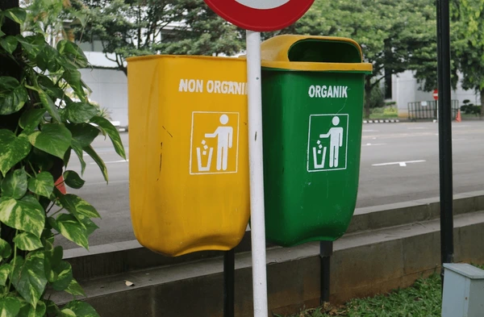
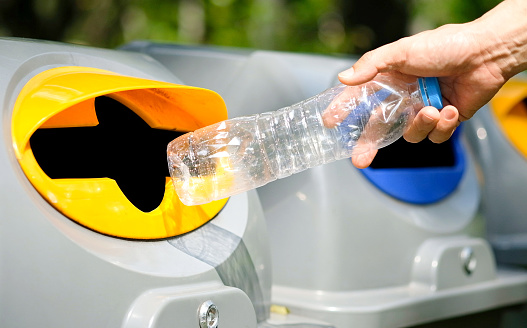

Setor Sampah
Setorkan sampah yang telah dipilah untuk dikelola Bank Sampah.
SiBas membantu dalam pengelolaan bank sampah menjadi lebih mudah, teratur, dan transparan.
TENTANG KAMI
SiBas merupakan sistem informasi Bank Sampah Kelurahan Jambangan yang menghubungkan proses setoran, pencatatan tabungan, hingga pemanfaatan kembali sampah dalam satu layanan.
Pencatatan setoran sampah lebih terorganisir.
Nasabah dapat memantau tabungan hasil setoran.
Mendukung pemanfaatan kembali sampah menjadi produk berguna.

FITUR LAYANAN
Setorkan sampah yang telah dipilah untuk dikelola Bank Sampah.
Pantau nilai hasil setoran yang tercatat sebagai tabungan.
Ajukan pencairan saldo tabungan melalui Si-Bas.
Lihat kembali catatan setoran sampah yang telah dilakukan.
PRODUK DAUR ULANG
Contoh produk hasil pemanfaatan kembali material bekas menjadi barang yang lebih berguna.

Tas anyaman dari kemasan bekas yang dapat digunakan kembali.
Pot tanaman kreatif dari botol bekas.
Keranjang serbaguna dari bahan bekas.
Tempat pensil praktis dari kaleng bekas.
Bunga hias dekoratif dari bahan bekas.
Dekorasi kreatif dari kardus bekas.